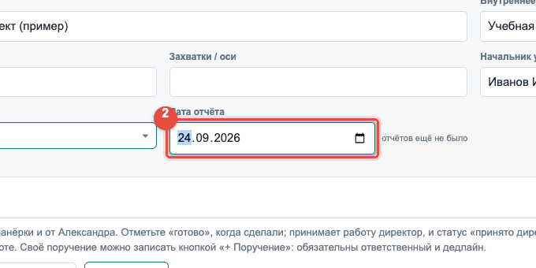
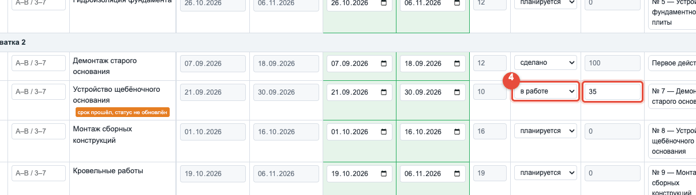
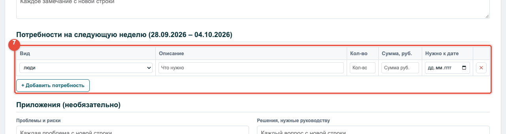
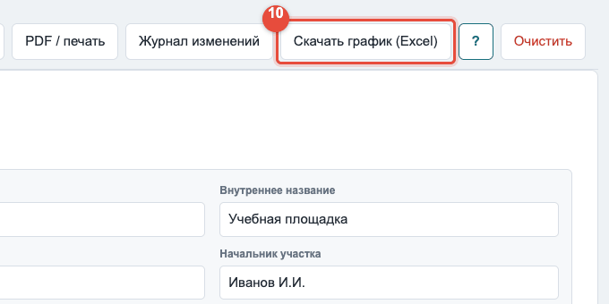
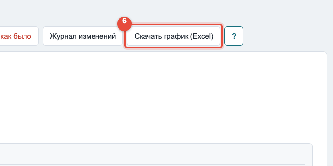
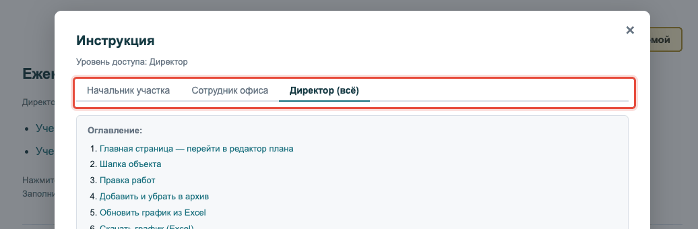

Нет доступа
Ссылка персональная — запросите у Александра Медведева.
Еженедельный отчёт начальника участка
Объект: Тепляк - этап №5 | Отчётная неделя:
Журнал изменений
Что люди поправили в этом проекте руками: правки в редакторе, изменения из отчётов, загрузки графика, поручения. Сдвиги, которые посчитались сами следом за чужой правкой, сюда не попадают.
| Когда | Кто | Что | Изменение | Источник |
|---|
Пока ничего не менялось.
Сначала выберите отчётную неделю
Отчёт заполняется за одну конкретную неделю. Пока она не выбрана, таблица работ и кнопки заблокированы.
↑ нажмите поле «Отчётная неделя»
Укажите дату отчёта
Без даты отчёт не отправляется. Нажмите поле — откроется календарь на текущем месяце.
Поручения
Что поручено по объекту — с планёрки и от Александра. Отметьте «готово», когда сделали; принимает работу директор, и статус «принято директором» ставит он. Красная ячейка даты — срок прошёл, а поручение ещё в работе. Своё поручение можно записать кнопкой «+ Поручение»: обязательны ответственный и дедлайн.
| Поручение | Ответственный | Дедлайн | Статус | Комментарий |
|---|
Поручений по этому объекту нет.
Таблица работ
«План.» — сроки по графику, «Факт.» — то, как идёт на самом деле: их и правят. Зелёная рамка фактических дат — в графике; красная рамка строки — просрочка при ручной правке. При изменении окончания связанные работы сдвигаются автоматически (без обязательных полей). Номер, захватка и название работы закреплены слева, шапка — сверху: при прокрутке вбок всегда видно, о какой работе идёт речь. Статус «в работе» — процент выполнения обязателен; «планируется» и «сделано» проставляют 0 и 100 сами. «Начинается после» — работа, после которой эта начинается: сдвинули её окончание — эта поедет следом. Если работа ни за какой другой не идёт, выберите «Первое действие».
| № | Захватка / оси | Работа | План. начало | План. оконч. | Факт. начало | Факт. оконч. | Длит., дн | Статус | % выполнения | Начинается после |
|---|
Замечания к списку работ (необязательно)
Если в списке чего-то не хватает, работа названа не так, как её называют на объекте, или работы в нём уже нет — напишите здесь своими словами. Сам список правят Александр и ПТО; отсюда ничего не меняется автоматически — замечание попадает в сводку и в повестку планёрки.
Потребности на следующую неделю ()
| Вид | Описание | Кол-во | Сумма, руб. | Нужно к дате |
|---|
Приложения (необязательно)
Инструкция
Оглавление:
1. Откройте свою ссылку. Форма откроется с вашей фамилией в шапке и списком всех работ объекта. Ссылка персональная — не передавайте её другим: кто её открыл, тот и отправляет отчёт.

2. Выберите отчётную неделю. Нажмите жёлтое поле «— выберите неделю —» — откроется список. Выберите неделю, за которую сдаёте отчёт. Затем нажмите поле «Дата отчёта» и выберите сегодняшнее число.


3. Поручения — блок над таблицей работ.
- Выполнили поручение — переключите с «сделать» на «готово» и при нужде добавьте комментарий.
- Красная дата — срок прошёл.
- Хотите добавить поручение, которое на планёрке не записали, — нажмите «+ Поручение» и заполните кому и к какому числу.


4. Таблица работ. Заполняйте только то, что изменилось за неделю.
- «План.» — даты из графика ПТО (не менять).
- «Факт.» — реальная дата окончания: когда работа закончится на самом деле.
- Статус — планируется / в работе / сделано.
- % выполнения — заполняйте по ситуации.


5. Сдвиг даты позже графика. Когда ставите дату позже плановой — под строкой появятся два поля с красной рамкой:
- Почему — причина сдвига.
- Что делаете, чтобы вернуться в срок.
Без заполнения форма не отправится. После заполнения появляется зелёная пометка «Отклонение объяснено ✓». Следующие работы, зависящие от этой, сдвинутся автоматически.


6. «Начинается после». Кнопка в строке работы: нажмите — откроется список всех работ объекта. Выберите ту, от которой зависит эта. Если работа начинается без условий — выберите «Первое действие».

7. Потребности на следующую неделю. Раздел в конце страницы. Заполните, что понадобится: люди, техника, материалы, сумма и к какому сроку.

8. Отправить. Нажмите «Отправить» — кнопка в верхней панели. При успехе появится зелёная полоса «Отправлено ✓» и путь к файлу. Если нужно что-то поправить — кнопка изменится на «Отправить изменения».


9. Нет интернета. Нажмите «Сохранить данные (JSON)» — файл скачается на устройство. Этот файл пришлите Александру — он поместит его в систему сам. Данные не потеряются.

10. Скачать график (Excel) — кнопка в панели инструментов. Это актуальный график со свежими датами — для печати и вывески на стену площадки после планёрки во вторник.

11. Журнал изменений — кнопка в панели инструментов. Здесь видно, кто и что правил в этом проекте руками: правки в редакторе, загрузки графика, поручения. Автоматические пересчёты не показываются.


Оглавление:
Хотите посмотреть, как выглядит форма у начальника участка? Инструкция НУ ↓
1. Редактор плана. Откройте главную страницу по своей ссылке. Прокрутите вниз — там блок «Редактор плана». Нажмите на название объекта — откроется страница редактора.

2. Шапка объекта. Вверху редактора — три поля: название, номер договора, начальник участка. Изменения записываются при нажатии «Сохранить план».

3. Правка работы. Нажмите на строку работы — она раскроется. Можно поправить: название, захватки, исходные даты и длительность (три поля связаны — измените любое), «Начинается после».
Изменённая строка жёлтая, добавленная — голубая. Блок «Что изменится» перечисляет правки словами.


4. Добавить / убрать в архив.
- Добавить: кнопка «+ Работа» внутри группы.
- В архив: кнопка «× Убрать» в строке работы. Работа исчезает из формы НУ, но остаётся в хранилище — данные не пропадают.
- Вернуть из архива: нажмите «Показать архив» в конце таблицы → «↩ Вернуть» у нужной работы.


5. Обновить график из Excel. В блоке «Обновить график из Excel» нажмите «Выберите файл», выберите .xls или .xlsx, затем «Отправить файл». Через 5–10 минут появится блок «Последнее обновление графика» — что сдвинулось, что добавилось, что ушло в архив.
Если загрузили не тот файл — нажмите «Отменить последнее обновление» в том же блоке.


6. Скачать график (Excel) — кнопка в панели инструментов. Это актуальный файл со свежими датами для печати на стену площадки после планёрки во вторник.

7. Поручения. Раздел сразу под шапкой объекта, над таблицей работ. Отличие от формы НУ — здесь доступен статус «принято директором»: «готово» говорит исполнитель, принимает — Александр. Дедлайн и текст поручения из формы НУ правятся только здесь. Красная ячейка даты — срок прошёл.

8. Журнал изменений — кнопка в панели. Кто, когда и что именно поправил: правки в редакторе, загрузки Excel, поручения. Фильтры — по человеку, по типу изменения и по периоду.

9. Новый проект. На главной странице — блок «Новый проект». Заполните название, договор, начальника участка и прикрепите Excel-график (если есть). Нажмите «Создать проект». Через 5–10 минут обновите страницу: объект появится в списке, а ниже формы, в «Последних заявках», — итог: создан и с каким кодом, загрузился ли график, или почему не создан.

Оглавление:
Хотите посмотреть, как выглядит форма у начальника участка? Инструкция НУ ↓
1. Редактор плана. Откройте главную страницу по своей ссылке. Прокрутите вниз — там блок «Редактор плана». Нажмите на название объекта — откроется страница редактора.
2. Шапка объекта. Вверху редактора — три поля: название, номер договора, начальник участка. Изменения записываются при нажатии «Сохранить план».
3. Правка работы. Нажмите на строку работы — она раскроется. Можно поправить: название, захватки, исходные даты и длительность (три поля связаны — измените любое), «Начинается после».
Изменённая строка жёлтая, добавленная — голубая. Блок «Что изменится» перечисляет правки словами.
4. Добавить / убрать в архив.
- Добавить: кнопка «+ Работа» внутри группы.
- В архив: кнопка «× Убрать» в строке работы. Работа исчезает из формы НУ, но остаётся в хранилище — данные не пропадают.
- Вернуть из архива: нажмите «Показать архив» в конце таблицы → «↩ Вернуть» у нужной работы.
5. Обновить график из Excel. В блоке «Обновить график из Excel» нажмите «Выберите файл», выберите .xls или .xlsx, затем «Отправить файл». Через 5–10 минут появится блок «Последнее обновление графика» — что сдвинулось, что добавилось, что ушло в архив.
Если загрузили не тот файл — нажмите «Отменить последнее обновление» в том же блоке.
6. Скачать график (Excel) — кнопка в панели инструментов. Это актуальный файл со свежими датами для печати на стену площадки после планёрки во вторник.
7. Поручения. Раздел сразу под шапкой объекта, над таблицей работ. Отличие от формы НУ — здесь доступен статус «принято директором»: «готово» говорит исполнитель, принимает — Александр. Дедлайн и текст поручения из формы НУ правятся только здесь. Красная ячейка даты — срок прошёл.
8. Журнал изменений — кнопка в панели. Кто, когда и что именно поправил: правки в редакторе, загрузки Excel, поручения. Фильтры — по человеку, по типу изменения и по периоду.
9. Новый проект. На главной странице — блок «Новый проект». Заполните название, договор, начальника участка и прикрепите Excel-график (если есть). Нажмите «Создать проект». Через 5–10 минут обновите страницу: объект появится в списке, а ниже формы, в «Последних заявках», — итог: создан и с каким кодом, загрузился ли график, или почему не создан.
На главной странице — ниже списка объектов. Виден только директору: здесь персональные ссылки, которые нельзя публиковать открыто.

Добавить сотрудника.
- Нажмите «+ Добавить сотрудника».
- Заполните ФИО (обязательно), должность, уровень доступа — Начальник участка или Сотрудник офиса.
- Начальнику участка — отметьте объекты.
- Нажмите «Завести и показать ссылку».
Ссылка появится сразу — скопируйте и передайте лично, не в общий чат: это ключ доступа. Заработает через 5–10 минут.

Скопировать ссылку сотрудника. В строке таблицы — кнопка «Скопировать». Ссылка закрыта точками: нажмите «Показать», чтобы увидеть полностью, или «Скопировать», чтобы передать, не видя ключа.

Изменить данные сотрудника.
- В строке сотрудника нажмите «Изменить» — откроется та же форма, что при добавлении, уже заполненная.
- Поправьте ФИО, должность, уровень доступа (Начальник участка или Сотрудник офиса) и, для начальника участка, объекты.
- Нажмите «Сохранить». Изменения появятся через 5–10 минут.
Ссылка у сотрудника остаётся прежней — заново передавать её не нужно. Новое ФИО появится в его форме и в журналах с этого момента; старые записи остаются как были. Если убрать у начальника участка объект, этот объект у него перестанет открываться. Сделали сотрудника офиса начальником участка — он больше не сможет править проекты, и наоборот.
У директоров уровень доступа на этой странице не меняется — поле неактивно; если нужно, напишите Артёму. Каждая правка записывается в «Кто кому выдавал доступ»: что было и что стало.

Отозвать доступ. Кнопка «Отозвать доступ» в строке, затем подтверждение. Через 5–10 минут ссылка перестанет работать. Запись остаётся серой строкой в истории.
Своя инструкция у каждого. На главной странице — кнопка «? Инструкция как пользоваться формой». На страницах форм — кнопка «?» вверху. Открывает инструкцию того уровня, с которым человек вошёл. У вас видны все три — переключайтесь вкладками наверху.

Вторник 13:00 — планёрка по повестке из поступивших отчётов.
После планёрки — нажмите «Скачать график (Excel)» и распечатайте обновлённый график для каждого объекта; повесьте на стену площадки.